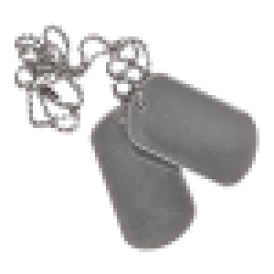
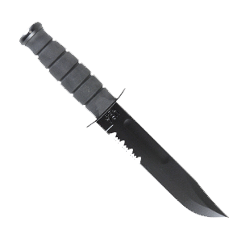
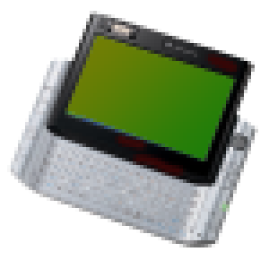
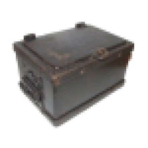
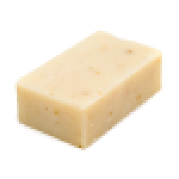

<div class='gui_container'>


<div id='inventory'>

<div class="inv_div">
  
  
  
</div>
<div class="inv_div">
  
  
  
</div>
<div class="inv_div">
  
</div>
<!--  -->
</div> <!-- END INVENTORY -->


<!-- SELECTIONS -->
  <!-- CURSORS MOVED BACK TO CURSORS.HTML, WHICH... WHY DOES THAT EXIST?-->
<!-- 
 -->
  <!-- END CURSORS -->

  <!-- CURRENT ITEM -->
<div id="current_item">

</div><!-- END SELECTIONS -->

</div>
